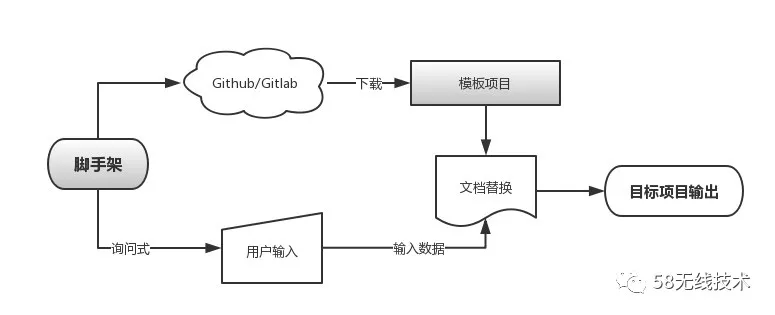

前端脚手架开发指南
何谓脚手架？
在前端工程化高度发展的当代，各种构建工具大行其道，webpack、gulp、rollup、fis等，这些构建工具的主要作用就是将前端代码工程化，实现代码编译，文件优化，模块分割，自动刷新，代码校验，自动发布等供嫩，我们在实际开发中，要根据自己的需求定制不同的配置，但是多数情况下，项目配置在不同的项目中改动不大，有些甚至不需要做任何修改。这个时候，开发不同的项目，我们需要将这些配置重新拷贝一遍，于是，为了减少重复性工作，脚手架的概念应运而生。
对于vue-cli,create-react-app,或者自己开发的工具，
脚手架的定位基本是一致的：创建项目初始文件
脚手架作用是：创建项目的初始文件，本质是方案的封装
编写一个脚手架
基本流程
考虑到模板项目可能需要经常更新，而脚手架可能更新不及时，所以我们通常不会将模板项目放到脚手架中，而是将其放在github（gitlab）上进行维护，项目创建时，拉取最新的代码，以保证最新创建的项目源码最新。下面是基本流程：

获取目录
process.cwd() 是当前执行node命令时候的文件夹地址 ——工作目录，保证了文件在不同的目录下执行时，路径始终不变
__dirname 是被执行的js 文件的地址 ——文件所在目录
获取输入命令行参数
const program = require('commander');
console.log(program.args[0])
cli中交互式询问
inquirer.prompt([{
type: 'input',
message: '请输入项目名称：',
name: 'projectName',
default: "my-template-project", // 默认值
validate: function (val) {
if (!val) { // 校验
return "请输入有效项目名称！";
} else {
return true
}
}
},
{
type: "confirm",
message: "是否使用监听？",
name: "watch",
},
{
type: 'list',
message: '请选择一种水果:',
name: 'fruit',
choices: [
"Apple",
"Pear",
"Banana"
],
filter: function (val) { // 使用filter将回答变为小写
return val.toLowerCase();
}
},
]).then(result => {
console.log(`你输入的项目名称是：${result.projectName}`)
console.log(`你是否选择监听：${result.watch}`)
console.log(`你选择的水果是：${result.fruit}`)
})